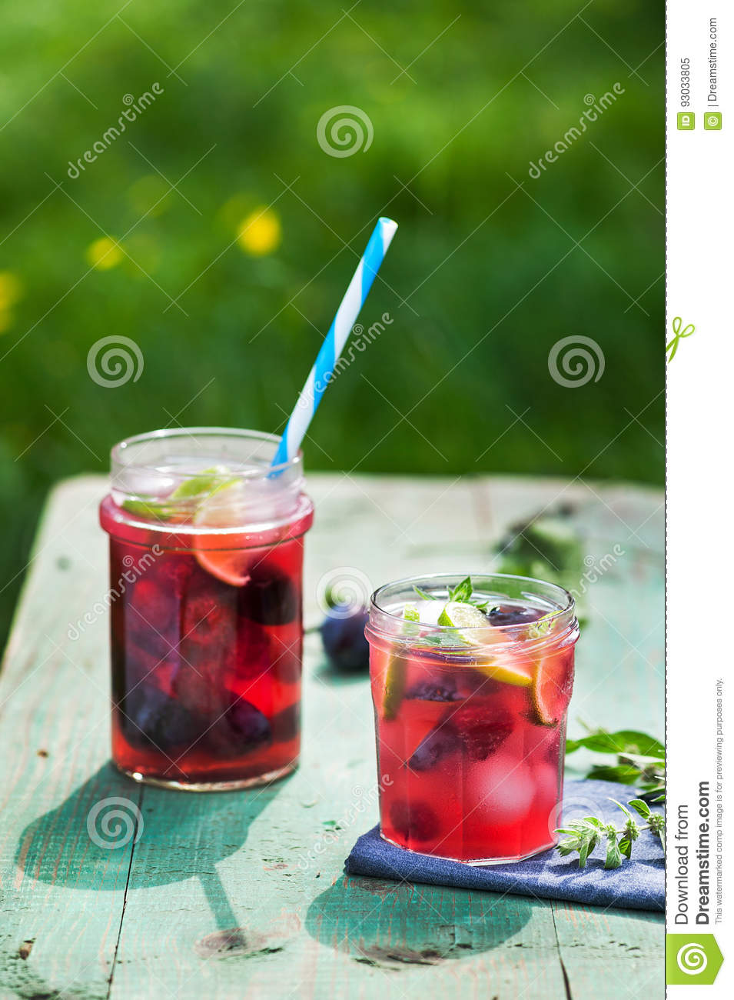

Kompot

Description:
Whether you get thirsty during a scorching hot summer day or a freezing cold winter's night- kompot has got your back. This delicious slavic beverage is made by boiling whatever fresh fruit are growing in ones garden (or whatever one could find in the frozen fruit section of the gas station) and can be enjoyed both hot and cold. Best of all: If stored correctly, it has a long shelf life, meaning that in can be enjoyed whenever, wherever. While the process of making kompot is simple, it would be unwise to leave it unattended.
Ingredients:
- Plenty of fruit of your choice (It can be anything, berries, apples, pears...fresh, frozen, does not matter, just make sure that you have a lot of it)
- 3 litres of water
- 2 tablespoons of honey
- 1 large cup of sugar
- 1 lemon
- 1 large pot
- 1 large cooking spoon
Steps:
- Add the 3 litres of water to the large pot, put the pot on the stove and bring it to a boil
- Add the fruit to the boiling water, bring it to a boil once more(Hint: in order to avoid the boiling hot water from splashing around, add the fruit slowly with the help of the cooking spoon)
- Once the water is boiling, lover the stove temperature and set a timer for 30 minutes, stir the pot occasionally Important: do NOT leave the pot unattended!
- Once 10 minutes have passed and the water has begun taking on the color of your fruits, add the cup of sugar and honey and stir well, raise the stove temperature and bring to a boil again
- Once the timer is up, take the pot from the stove and the lemon juice, stir well again.
- Fill the kompot into a container of your choice. Some prefer to remove the fruit from the kompot at this part, but this is highly optional and I personally recommend against it
And there you have it! Enjoy your hot/cold glass of homemade kompot!